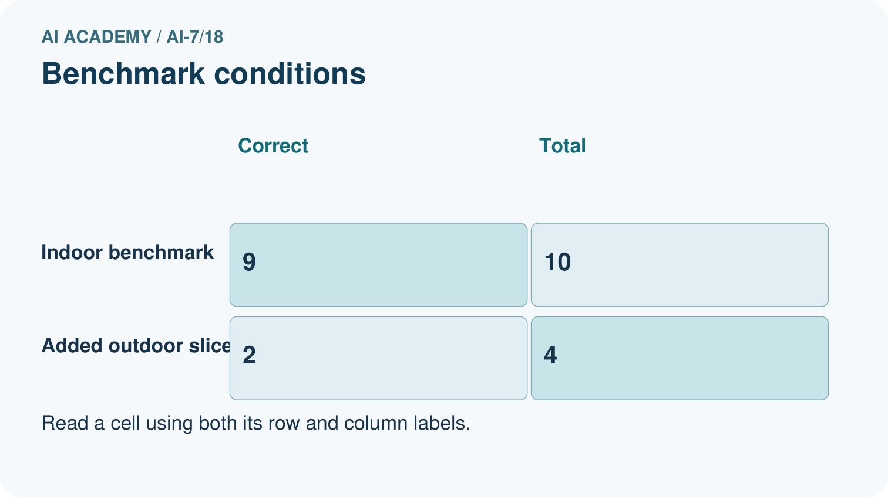
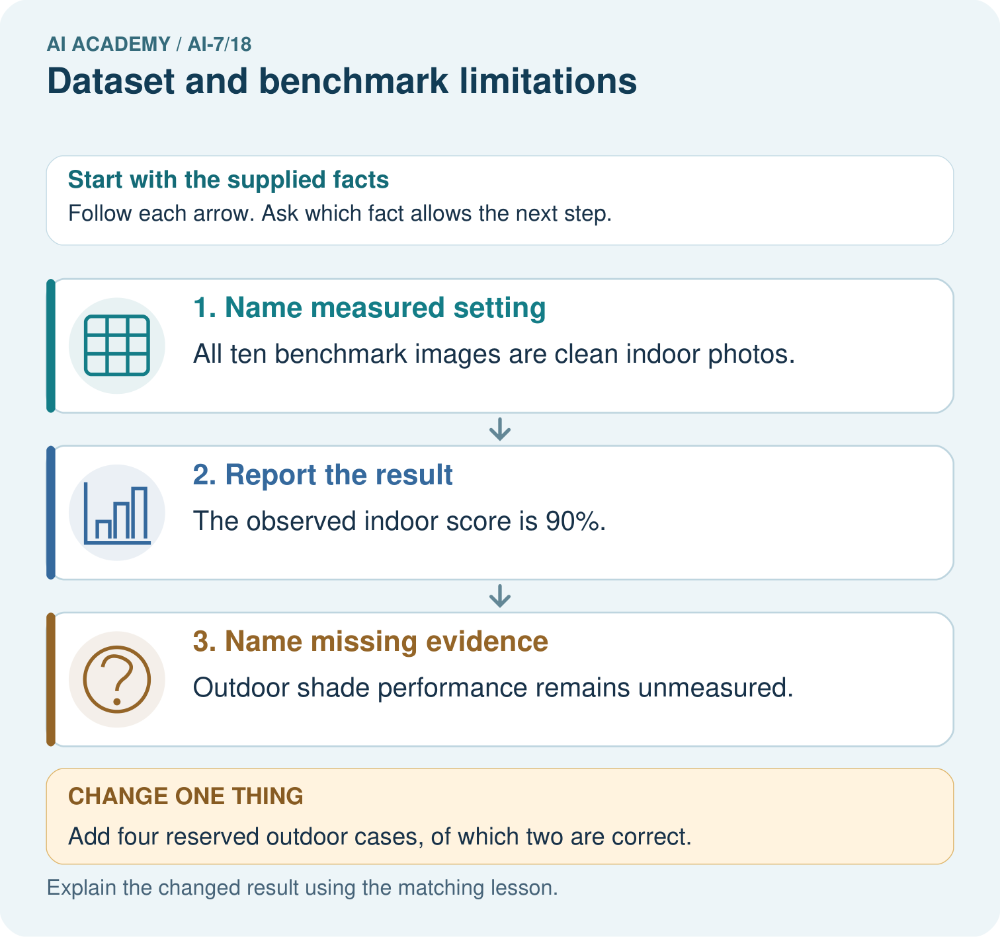

AI Academy · Level 7 · Grade 12 · Week 18 · Workbook
Dataset and benchmark limitations
Learn to understand, design, build, test and explain AI systems responsibly.
Project: Reproducible AI Research Study
Workbook · 1 of 14
Recall and choose your starting point
Try the recall before opening notes. Then use a different colour or a labelled second line to correct your explanation.
Sensitivity analysis
Without opening the old lesson, explain one key idea from Sensitivity analysis. Give an example and a mistake that the idea helps you avoid.
Multiple comparisons
Without opening the old lesson, explain one key idea from Multiple comparisons. Give an example and a mistake that the idea helps you avoid.
Uncertainty intervals
Without opening the old lesson, explain one key idea from Uncertainty intervals. Give an example and a mistake that the idea helps you avoid.
Workbook · 2 of 14
Practise with fading help
Use W2: Trace the worked case for Dataset and benchmark limitations. Record the answer once; the lesson and workbook refer to the same attempt.
| Given inputs | Procedure I chose | Middle steps | Result and check |
|---|---|---|---|
Workbook · 3 of 14
Individual reasoning check
Use the worked case for Dataset and benchmark limitations. Proposed explanation: “The worked result establishes every future case”. Decide whether this explanation is supported. Point to the step or supplied fact that decides; explain your repair if needed.
Workbook · 4 of 14
Independent transfer case
Independent case: Apply a new case independently
Twelve rows include four copies of one source and eight others. Count unique units and name one coverage concern.
Attempt this case before feedback. Record any help. Earlier examples below are further practice; a case already practised with feedback cannot establish fresh transfer.
Workbook · 5 of 14
W1 Explain the mechanism
Explain the weekly mechanism in your own words. Use the worked scenario to name its input, decision rule and output.
Workbook · 6 of 14
W2 Trace the worked case
Ten benchmark rows include three copies of one source and seven other unique sources. Show the intermediate steps and give the conclusion with its scope.
Workbook · 7 of 14
W3 Audit the limit
A report omits this qualification: Benchmark success does not establish performance on a deployment population missing from its design. Explain how omitting it could change a reader's interpretation, and write an accurate replacement.
Workbook · 8 of 14
W4 Apply a new case independently
Twelve rows include four copies of one source and eight others. Count unique units and name one coverage concern.
Workbook · 9 of 14
W5 Design a revealing follow-up
For the worked scenario, propose one additional case that could reveal a failure, describe its expected outcome before running it, and explain what would need to remain fixed for a fair comparison. Do not reuse W4 as a new final test after receiving feedback.
Workbook · 10 of 14
Project checkpoint and reflection
Add a labelled dataset and benchmark limitations evidence sheet to Reproducible AI Research Study. Show how you can explain the mechanism and terminology of dataset and benchmark limitations. Use the supplied fictional case and keep its inputs, intermediate steps, calculation or prediction, and limitation. Connect this record to last week’s record; a matching answer without a trace is insufficient.
Workbook · 11 of 14
Feedback, return check and learning record
| Evidence | My record |
|---|---|
| Worked alone / hint / model | |
| First step I repaired and why | |
| New case checked later; date and result | |
| What I can now explain without notes | |
| One remaining question |
Revisit this idea with your teacher after a delay. Familiarity is different from explaining and using it on a changed case.
Workbook · 12 of 14
Pictorial case practice: Dataset and benchmark limitations
A benchmark can miss the intended setting. A plant model is evaluated on clean indoor photos but proposed for shaded outdoor photos.
Indoor benchmark: 9/10 correct. No outdoor cases are present. The same model is intended for both.


Report the indoor benchmark with its denominator and missing condition. After two correct outdoor cases out of four are added, what slice rate is supported and what remains uncertain?
Support used: alone / hint / worked example. This record is practice evidence.
Project connection: For the Reproducible AI Research Study, retain an annotated worked trace and the changed-case reasoning. Connect the claim to its records, units and assumptions so another investigator can challenge or reproduce it.
Workbook · 13 of 14
Project portfolio milestone
Project: Reproducible AI Research Study
Current milestone: Test changed cases. Keep normal, boundary and failure cases; compare expected and observed results.
For the Reproducible AI Research Study, retain an annotated worked trace and the changed-case reasoning. Connect the claim to its records, units and assumptions so another investigator can challenge or reproduce it.
| Evidence to keep | My record |
|---|---|
| This week’s input and deciding step | |
| Prediction and actual result (or labelled paper trace) | |
| One change since the previous checkpoint and why | |
| One error or limit and the next test |
Workbook · 14 of 14
Supported practice and learning evidence
Use this supported practice once, in the browser or on paper. Keep the reserved independent assessment for a separate first attempt before teacher feedback.
A benchmark can miss the intended setting. A plant model is evaluated on clean indoor photos but proposed for shaded outdoor photos.
Practice 1: explain the deciding evidence
Which labelled step matches this detail? Outdoor shade performance remains unmeasured.
1. Report the result
2. Name measured setting
3. Name missing evidence
Hint if needed: Read the steps in the pictorial case. Match the supplied detail to the stage that performs or records it.
After your attempt, compare with the supported explanation: Name missing evidence Outdoor shade performance remains unmeasured. A benchmark represents particular tasks and collection conditions. High performance on it cannot automatically establish fitness for a different deployment setting.
Practice 2: explain the deciding evidence
Changed-case practice: Add four reserved outdoor cases, of which two are correct. Which conclusion is supported by the supplied facts?
1. Report the outdoor slice as 2/4=50%, separately from indoor results.
2. We can decide the result without examining the changed input or the procedure.
3. This one example guarantees correct results for every future input.
Hint if needed: Use the changed condition and the deciding step in the pictorial trace. The answer must say what follows from those facts.
After your attempt, compare with the supported explanation: Report the outdoor slice as 2/4=50%, separately from indoor results. The new records finally measure the missing condition, with a small denominator.
Repair a missing building block
Review Sensitivity analysis (ai-7/17). Goal: Explain the mechanism and terminology of sensitivity analysis. Short practice: Classify 0.4, 0.6 and 0.8 at cutoffs 0.5, 0.7 and exactly 0.6. Which equality rule decides the boundary, and can these unlabelled scores identify the best cutoff?. Return to this week and explain what you changed.
Review Multiple comparisons (ai-7/15). Goal: Explain the mechanism and terminology of multiple comparisons. Short practice: Calculate the six-test cutoff and identify which supplied p-values reject. Why must the team count every planned comparison rather than report only its smallest p-value?. Return to this week and explain what you changed.
Review Uncertainty intervals (ai-7/12). Goal: Explain the mechanism and terminology of uncertainty intervals. Short practice: Locate -0.8 and zero relative to the supplied interval [-1.4,-0.2]. Interpret the sign and confidence-method meaning, then describe what changes with interval [-1.4,0.3].. Return to this week and explain what you changed.
Keep your completed work
Use Download completed work in the hosted lesson to export your answers, reflections, practice feedback and code-run evidence. Open the HTML copy to read or print it. Drafts stay in this browser when storage is available; clear drafts on a shared device.